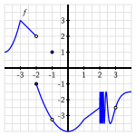
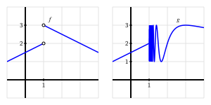
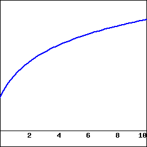
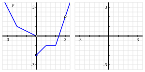

Section1.7Limits, Continuity, and Differentiability
Motivating Questions
What does it mean graphically to say that \(f\) has limit \(L\) as \(x \to a\text{?}\) How is this connected to having a left-hand limit at \(x = a\) and having a right-hand limit at \(x = a\text{?}\)
What does it mean to say that a function \(f\) is continuous at \(x = a\text{?}\) What role do limits play in determining whether or not a function is continuous at a point?
What does it mean graphically to say that a function \(f\) is differentiable at \(x = a\text{?}\) How is this connected to the function being locally linear?
How are the characteristics of a function having a limit, being continuous, and being differentiable at a given point related to one another?
In Section 1.2, we learned how limits can be used to study the trend of a function near a fixed input value. In this section, we aim to quantify how the function acts and how its values change near a particular point. If the function has a limit \(L\) at \(x = a\text{,}\) we will consider how the value of the function \(f(a)\) is related to \(\lim_{x \to a} f(x)\text{,}\) and whether or not the function has a derivative \(f'(a)\) at \(x = a\text{.}\)
Preview Activity1.7.1.
A function \(f\) is given by the graph in Figure 1.7.1. Use the graph to answer each of the following questions. Note: to the right of \(x = 2\text{,}\) the graph of \(f\) is exhibiting infinite oscillatory behavior similar to the function \(\sin(\frac{\pi}{x})\) that we encountered in the key example early in Section 1.2. Assume that \(f(2) = -2.5\text{.}\)
For each of the values \(a = -3, -2, -1, 0, 1, 2, 3\text{,}\) determine whether or not \(\lim_{x \to a} f(x)\) exists. If the function has a limit \(L\) at a given point, state the value of the limit using the notation \(\lim_{x \to a} f(x) = L\text{.}\) If the function does not have a limit at a given point, write a sentence to explain why.
For each of the values of \(a\) from part (a) where \(f\) has a limit, determine the value of \(f(a)\) at each such point. In addition, for each such \(a\) value, does \(f(a)\) have the same value as \(\lim_{x \to a} f(x)\text{?}\)
For each of the values \(a = -3, -2, -1, 0, 1, 2, 3\text{,}\) determine whether or not \(f'(a)\) exists. In particular, based on the given graph, ask yourself if it is reasonable to say that \(f\) has a tangent line at \((a,f(a))\) for each of the given \(a\)-values. If so, visually estimate the slope of the tangent line to find the value of \(f'(a)\text{.}\)

Figure1.7.1.The graph of \(y = f(x)\text{.}\)
Subsection1.7.1Having a limit at a point
In Section 1.2, we learned that \(f\) has limit \(L\) as \(x\) approaches \(a\) provided that we can make the value of \(f(x)\) as close to \(L\) as we like by taking \(x\) sufficiently close (but not equal to) \(a\text{.}\) If so, we write \(\lim_{x \to a} f(x) = L\text{.}\)
Essentially there are two behaviors that a function can exhibit near a point where it fails to have a limit. In Figure 1.7.3, at left we see a function \(f\) whose graph shows a jump at \(a = 1\text{.}\) If we let \(x\) approach 1 from the left side, the value of \(f\) approaches 2, but if we let \(x\) approach \(1\) from the right, the value of \(f\) tends to 3. Because the value of \(f\) does not approach a single number as \(x\) gets arbitrarily close to 1 from both sides, we know that \(f\) does not have a limit at \(a = 1\text{.}\)
For such cases, we introduce the notion of left and right (or one-sided) limits.
Definition1.7.2.
We say that \(f\) has limit \(L_1\) as \(x\) approaches \(a\) from the left and write
provided that we can make the value of \(f(x)\) as close to \(L_1\) as we like by taking \(x\) sufficiently close to \(a\) while always having \(x \lt a\text{.}\) We call \(L_1\) the left-hand limit of \(f\) as \(x\) approaches \(a\text{.}\) Similarly, we say \(L_2\) is the right-hand limit of \(f\) as \(x\) approaches \(a\) and write
provided that we can make the value of \(f(x)\) as close to \(L_2\) as we like by taking \(x\) sufficiently close to \(a\) while always having \(x \gt a\text{.}\)
In the graph of the function \(f\) in Figure 1.7.3, we see that
Precisely because the left and right limits are not equal, the overall limit of \(f\) as \(x \to 1\) fails to exist.

Figure1.7.3.Functions \(f\) and \(g\) that each fail to have a limit at \(a = 1\text{.}\)
For the function \(g\) pictured at right in Figure 1.7.3, the function fails to have a limit at \(a = 1\) for a different reason. While the function does not have a jump in its graph at \(a = 1\text{,}\) it is still not the case that \(g\) approaches a single value as \(x\) approaches 1. In particular, due to the infinitely oscillating behavior of \(g\) to the right of \(a = 1\text{,}\) we say that the right-hand limit of \(g\) as \(x \to 1^+\) does not exist, and thus \(\lim_{x \to 1} g(x) \ \text{does not exist} \text{.}\)
To summarize, if either a left- or right-hand limit fails to exist or if the left- and right-hand limits are not equal to each other, the overall limit does not exist.
A function \(f\) has limit \(L\) as \(x \to a\) if and only if
That is, a function has a limit at \(x = a\) if and only if both the left- and right-hand limits at \(x = a\) exist and have the same value.
In Preview Activity 1.7.1, the function \(f\) given in Figure 1.7.1 fails to have a limit at only two values: at \(a = -2\) (where the left- and right-hand limits are 2 and \(-1\text{,}\) respectively) and at \(x = 2\text{,}\) where \(\lim_{x \to 2^+} f(x)\) does not exist). Note well that even at values such as \(a = -1\) and \(a = 0\) where there are holes in the graph, the limit still exists.
Activity1.7.2.
Consider a function that is piecewise-defined according to the formula
\begin{equation*}
f(x) = \begin{cases}3(x+2)+2 \amp \text{ for }-3 \lt x \lt -2 \\
\frac{2}{3}(x+2)+1 \amp \text{ for }-2 \le x \lt -1 \\
\frac{2}{3}(x+2)+1 \amp \text{ for }-1 \lt x \lt 1 \\
2 \amp \text{ for }x = 1 \\
4-x \amp \text{ for }x \gt 1
\end{cases}
\end{equation*}
Use the given formula to answer the following questions.
Figure1.7.4.Axes for plotting the function \(y = f(x)\) in Activity 1.7.2.
For each of the values \(a = -2, -1, 0, 1, 2\text{,}\) compute \(f(a)\text{.}\)
For each of the values \(a = -2, -1, 0, 1, 2\text{,}\) determine \(\lim_{x \to a^-} f(x)\) and \(\lim_{x \to a^+} f(x)\text{.}\)
For each of the values \(a = -2, -1, 0, 1, 2\text{,}\) determine \(\lim_{x \to a} f(x)\text{.}\) If the limit fails to exist, explain why by discussing the left- and right-hand limits at the relevant \(a\)-value.
For which values of \(a\) is the following statement true?
On the axes provided in Figure 1.7.4, sketch an accurate, labeled graph of \(y = f(x)\text{.}\) Be sure to carefully use open circles (○) and filled circles (●) to represent key points on the graph, as dictated by the piecewise formula.
Subsection1.7.2Being continuous at a point
Intuitively, a function is continuous if we can draw its graph without ever lifting our pencil from the page. Alternatively, we might say that the graph of a continuous function has no jumps or holes in it. In Figure 1.7.5 we consider three functions that have a limit at \(a = 1\text{,}\) and use them to make the idea of continuity more precise.
Figure1.7.5.Functions \(f\text{,}\)\(g\text{,}\) and \(h\) that demonstrate subtly different behaviors at \(a = 1\text{.}\)
First consider the function in the left-most graph. Note that \(f(1)\) is not defined, which leads to the resulting hole in the graph of \(f\) at \(a = 1\text{.}\) We will naturally say that \(f\) is not continuous at \(a = 1\). For the function \(g\text{,}\) we observe that while \(\lim_{x \to 1} g(x) = 3\text{,}\) the value of \(g(1) = 2\text{,}\) and thus the limit does not equal the function value. Here, too, we will say that \(g\) is not continuous, even though the function is defined at \(a = 1\text{.}\) Finally, the function \(h\) appears to be the most well-behaved of all three, since at \(a = 1\) its limit and its function value agree. That is,
With no hole or jump in the graph of \(h\) at \(a = 1\text{,}\) we say that \(h\) is continuous there. More formally, we make the following definition.
Definition1.7.6.
A function \(f\) is continuous at \(x = a\) provided that
\(f\) has a limit as \(x \to a\text{,}\)
\(f\) is defined at \(x = a\text{,}\) and
\(\lim_{x \to a} f(x) = f(a)\text{.}\)
Conditions (a) and (b) are technically contained implicitly in (c), but we state them explicitly to emphasize their individual importance. The definition says that a function is continuous at \(x = a\) provided that its limit as \(x \to a\) exists and equals its function value at \(x = a\text{.}\) If a function is continuous at every point in an interval \([a,b]\text{,}\) we say the function is “continuous on \([a,b]\text{.}\)” If a function is continuous at every point in its domain, we simply say the function is “continuous.” Thus, continuous functions are particularly nice: to evaluate the limit of a continuous function at a point, all we need to do is evaluate the function.
For example, consider \(p(x) = x^2 - 2x + 3\text{.}\) It can be proved that every polynomial is a continuous function at every real number, and thus if we would like to know \(\lim_{x \to 2} p(x)\text{,}\) we simply compute
This route of substituting an input value to evaluate a limit works whenever we know that the function being considered is continuous. Besides polynomial functions, all exponential functions and the sine and cosine functions are continuous at every point, as are many other familiar functions and combinations thereof.
Activity1.7.3.
This activity builds on your work in Preview Activity 1.7.1, using the same function \(f\) as given by the graph that is repeated in Figure 1.7.7. Assume that \(f(2) = -2.5\text{.}\)
Figure1.7.7.The graph of \(y = f(x)\) for Activity 1.7.3.
At which values of \(a\) does \(\lim_{x \to a} f(x)\) not exist?
At which values of \(a\) is \(f(a)\) not defined?
At which values of \(a\) does \(f\) have a limit, but \(\lim_{x \to a} f(x) \ne f(a)\text{?}\)
State all values of \(a\) for which \(f\) is not continuous at \(x = a\text{.}\)
Which condition is stronger, and hence implies the other: \(f\) has a limit at \(x = a\) or \(f\) is continuous at \(x = a\text{?}\) Explain, and hence complete the following sentence: “If \(f\) at \(x = a\text{,}\) then \(f\) at \(x = a\text{,}\)” where you complete the blanks with has a limit and is continuous, using each phrase once.
Subsection1.7.3Being differentiable at a point
We recall that a function \(f\) is said to be differentiable at \(x = a\) if \(f'(a)\) exists. Moreover, for \(f'(a)\) to exist, we know that the function \(y = f(x)\) must have a tangent line at the point \((a,f(a))\text{,}\) since \(f'(a)\) is precisely the slope of this line. In order to even ask if \(f\) has a tangent line at \((a,f(a))\text{,}\) it is necessary that \(f\) be continuous at \(x = a\text{:}\) if \(f\) fails to have a limit at \(x = a\text{,}\) if \(f(a)\) is not defined, or if \(f(a)\) does not equal the value of \(\lim_{x \to a} f(x)\text{,}\) then it doesn’t make sense to talk about a tangent line to the curve at this point.
Indeed, it can be proved formally that if a function \(f\) is differentiable at \(x = a\text{,}\) then it must be continuous at \(x = a\text{.}\) So, if \(f\) is not continuous at \(x = a\text{,}\) then it is automatically the case that \(f\) is not differentiable there. For example, in Figure 1.7.5, both \(f\) and \(g\) fail to be differentiable at \(x = 1\) because neither function is continuous at \(x = 1\text{.}\) But can a function fail to be differentiable at a point where the function is continuous?
In Figure 1.7.8, the function has a sharp corner at a point. For the pictured function \(f\text{,}\) we observe that \(f\) is clearly continuous at \(a = 1\text{,}\) since \(\lim_{x \to 1} f(x) = 1 = f(1)\text{.}\)
Figure1.7.8.A function \(f\) that is continuous at \(a = 1\) but not differentiable at \(a = 1\text{;}\) at right, we zoom in on the point \((1,1)\) in a magnified version of the box in the left-hand plot.
But the function \(f\) in Figure 1.7.8 is not differentiable at \(a = 1\) because \(f'(1)\) fails to exist. One way to see this is to observe that \(f'(x) = -1\) for every value of \(x\) that is less than 1, while \(f'(x) = +1\) for every value of \(x\) that is greater than 1. That makes it seem that either \(+1\) or \(-1\) would be equally good candidates for the value of the derivative at \(x = 1\text{.}\) Alternately, we could use the limit definition of the derivative to attempt to compute \(f'(1)\text{,}\) and discover that the derivative does not exist. Finally, we can see visually that the function \(f\) in Figure 1.7.8 does not have a tangent line. When we zoom in on \((1,1)\) on the graph of \(f\text{,}\) no matter how closely we examine the function, it will always look like a “V”, and never like a single line, which tells us there is no possibility for a tangent line there.
If a function does have a tangent line at a given point, when we zoom in on the point of tangency, the function and the tangent line should appear essentially indistinguishable 1
See, for instance, this applet, where zooming in shows the increasing similarity between the tangent line and the curve.
. Conversely, if we zoom in on a point and the function looks like a single straight line, then the function should have a tangent line there, and thus be differentiable. Hence, a function that is differentiable at \(x = a\) will, up close, look more and more like its tangent line at \((a,f(a))\text{.}\) Therefore, we say that a function that is differentiable at \(x = a\) is locally linear.
To summarize the preceding discussion of differentiability and continuity, we make several important observations.
If \(f\) is differentiable at \(x = a\text{,}\) then \(f\) is continuous at \(x = a\text{.}\) Equivalently, if\(f\) fails to be continuous at \(x = a\text{,}\) then \(f\) will not be differentiable at \(x = a\text{.}\)
A function can be continuous at a point, but not be differentiable there. In particular, a function \(f\) is not differentiable at \(x = a\) if the graph has a sharp corner (or cusp) at the point \((a,f(a))\text{.}\)
If \(f\) is differentiable at \(x = a\text{,}\) then \(f\) is locally linear at \(x = a\text{.}\) That is, when a function is differentiable, it looks linear when viewed up close because it resembles its tangent line there.
Activity1.7.4.
In this activity, we explore two different functions and classify the points at which each is not differentiable. Let \(g\) be the function given by the rule \(g(x) = |x|\text{,}\) and let \(f\) be the function that we have previously explored in Preview Activity 1.7.1, whose graph is given again in Figure 1.7.9.
Figure1.7.9.The graph of \(y = f(x)\) for Activity 1.7.4.
Reasoning visually, explain why \(g\) is differentiable at every point \(x\) such that \(x \ne 0\text{.}\)
Use the limit definition of the derivative to show that \(g'(0) = \lim_{h \to 0} \frac{|h|}{h}\text{.}\)
Explain why \(g'(0)\) fails to exist by using small positive and negative values of \(h\text{.}\)
State all values of \(a\) for which \(f\) is not differentiable at \(x = a\text{.}\) For each, provide a reason for your conclusion.
True or false: if a function \(p\) is differentiable at \(x = b\text{,}\) then \(\lim_{x \to b} p(x)\) must exist. Why?
Subsection1.7.4Summary
A function \(f\) has limit \(L\) as \(x \to a\) if and only if \(f\) has a left-hand limit at \(x = a\text{,}\)\(f\) has a right-hand limit at \(x = a\text{,}\) and the left- and right-hand limits are equal. Visually, this means that there can be a hole in the graph at \(x = a\text{,}\) but the function must approach the same single value from either side of \(x = a\text{.}\)
A function \(f\) is continuous at \(x = a\) whenever \(f(a)\) is defined, \(f\) has a limit as \(x \to a\text{,}\) and the value of the limit and the value of the function agree. This guarantees that there is not a hole or jump in the graph of \(f\) at \(x = a\text{.}\)
A function \(f\) is differentiable at \(x = a\) whenever \(f'(a)\) exists, which means that \(f\) has a tangent line at \((a,f(a))\) and thus \(f\) is locally linear at \(x = a\text{.}\) Informally, this means that the function looks like a line when viewed up close at \((a,f(a))\) and that there is not a corner point or cusp at \((a,f(a))\text{.}\)
Of the three conditions discussed in this section (having a limit at \(x = a\text{,}\) being continuous at \(x = a\text{,}\) and being differentiable at \(x = a\)), the strongest condition is being differentiable, and the next strongest is being continuous. In particular, if \(f\) is differentiable at \(x = a\text{,}\) then \(f\) is also continuous at \(x = a\text{,}\) and if \(f\) is continuous at \(x = a\text{,}\) then \(f\) has a limit at \(x = a\text{.}\)
Exercises1.7.5Exercises
1.Limit values of a piecewise graph.
Use the figure below, which gives a graph of the function \(f(x)\text{,}\) to give values for the indicated limits. If a limit does not exist, enter none.
(a)\(\lim\limits_{x \rightarrow -1} f(x)\) = help (limits) 2
/pg_files/helpFiles/Entering-Limits.html
(b)\(\lim\limits_{x \rightarrow 0} f(x)\) =
(c)\(\lim\limits_{x \rightarrow 1} f(x)\) =
(d)\(\lim\limits_{x \rightarrow 4} f(x)\) =
2.Limit values of a piecewise formula.
For the function
\begin{equation*}
f(x) = \begin{cases} 2 x - 4, \amp 0\le x \lt 4\\ -2, \amp x = 4\\ x^2 - 8 x + 20, \amp 4 \lt x \end{cases}
\end{equation*}
use algebra to find each of the following limits:
\(\lim\limits_{x\to 4^{+}}\, f(x) =\)
\(\lim\limits_{x\to 4^{-}}\, f(x) =\)
\(\lim\limits_{x\to 4}\, f(x) =\)
(For each, enter DNE if the limit does not exist.)
Sketch a graph of \(f(x)\) to confirm your answers.
3.Continuity and differentiability of a graph.
Consider the function graphed below.

At what \(x\)-values does the function appear to not be continuous? \(x =\)
At what \(x\)-values does the function appear to not be differentiable? \(x =\)
(Enter none if there are no \(x\)-values that apply; enter \(x\)-values as a comma-separated list, e.g., 1,3,5.)
4.Continuity of a piecewise formula.
Find \(k\) so that the following function is continuous:
Consider the graph of the function \(y = p(x)\) that is provided in Figure 1.7.10. Assume that each portion of the graph of \(p\) is a straight line, as pictured.

Figure1.7.10.At left, the piecewise linear function \(y = p(x)\text{.}\) At right, axes for plotting \(y = p'(x)\text{.}\)
State all values of \(a\) for which \(\lim_{x \to a} p(x)\) does not exist.
State all values of \(a\) for which \(p\) is not continuous at \(a\text{.}\)
State all values of \(a\) for which \(p\) is not differentiable at \(x = a\text{.}\)
On the axes provided in Figure 1.7.10, sketch an accurate graph of \(y = p'(x)\text{.}\)
6.
For each of the following prompts, give an example of a function that satisfies the stated criteria. A formula or a graph, with reasoning, is sufficient for each. If no such example is possible, explain why.
A function \(f\) that is continuous at \(a = 2\) but not differentiable at \(a = 2\text{.}\)
A function \(g\) that is differentiable at \(a = 3\) but does not have a limit at \(a=3\text{.}\)
A function \(h\) that has a limit at \(a = -2\text{,}\) is defined at \(a = -2\text{,}\) but is not continuous at \(a = -2\text{.}\)
A function \(p\) that satisfies all of the following:
\(p(-1) = 3\) and \(\lim_{x \to -1} p(x) = 2\)
\(p(0) = 1\) and \(p'(0) = 0\)
\(\lim_{x \to 1} p(x) = p(1)\) and \(p'(1)\) does not exist
7.
Let \(h(x)\) be a function whose derivative \(y= h'(x)\) is given by the graph on the right in Figure 1.7.11.
Based on the graph of \(y = h'(x)\text{,}\) what can you say about the behavior of the function \(y = h(x)\text{?}\)
At which values of \(x\) is \(y = h'(x)\) not defined? What behavior does this lead you to expect to see in the graph of \(y=h(x)\text{?}\)
Is it possible for \(y = h(x)\) to have points where \(h\) is not continuous? Explain your answer.
On the axes provided at left, sketch at least two distinct graphs that are possible functions \(y = h(x)\) that each have a derivative \(y = h'(x)\) that matches the provided graph at right. Explain why there are multiple possibilities for \(y = h(x)\text{.}\)
Figure1.7.11.Axes for plotting \(y = h(x)\) and, at right, the graph of \(y = h'(x)\text{.}\)
8.
Consider the function \(g(x) = \sqrt{|x|}\text{.}\)
Use a graph to explain visually why \(g\) is not differentiable at \(x = 0\text{.}\)
Use the limit definition of the derivative to show that
Investigate the value of \(g'(0)\) by estimating the limit in (b) using small positive and negative values of \(h\text{.}\) For instance, you might compute \(\frac{\sqrt{|-0.01|}}{0.01}\text{.}\) Be sure to use several different values of \(h\) (both positive and negative), including ones closer to 0 than 0.01. What do your results tell you about \(g'(0)\text{?}\)
Use your graph in (a) to sketch an approximate graph of \(y = g'(x)\text{.}\)